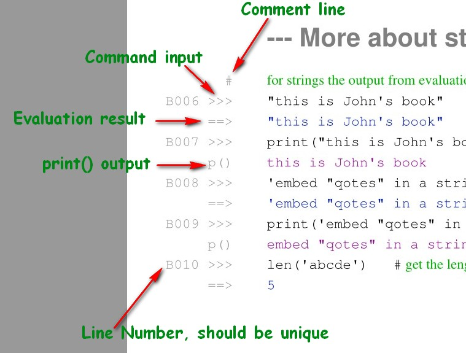

OOTS - Out-of-the-Shell¶
Learn Python on the command line
The Python Shell¶
Python is mostly used to execute Python scripts. These are text files with a name ending with .py. When Python is started with a .py file as an argument, it interprets and executes the commands in that file. But Python also offers an interactive way of working with the Python interpreter. Starting Python without an argument starts the Python console, which allows to directly type Python commands.
{kind=link}
To end the Python interpreter type exit or [ctrl]+z.
The OOTS Documents Format¶
Working with the console is an easy way to learn the basic elements of the Python Language. It gives an immediate feedback and can be helpful to understand, how Python works.
The OOTS documents come in the form of pdf files and can be found in the oots_folder on the Github Repository
An OOTS document shows a collection of Python commands and the output received from the Python console. It also contains comment lines, which try to explain some details.
Like working on the console, entering Python code, the OOTS documents try to show the statements and expressions executed by Python and the results as they appear on the console. Whenever a line in an OOTS document is unclear, try to type it into a Python console and compare the results.
OOTS - types of lines¶
This is a sample from an OOTS document.
{kind=link}
It shows the different line types, that occur in the documents.
The B010 line shows a function call len() and shows the result of the evaluation. This is the usual way to show function calls. The print() statements are also function calls, but the produce direct output to the console, which is shown as p(). The evaluation of the print statement is suppressed (it would be None). Its important to understand the different output format of print() and other functions.